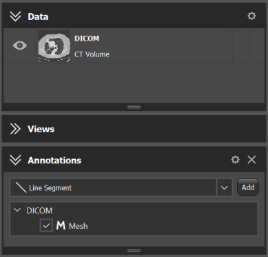

|
ImFusion C++ SDK 4.5.0-rc+43-5d204848
|
|
ImFusion C++ SDK 4.5.0-rc+43-5d204848
|
Specific kinds of Data can have corresponding Interactive Annotations used for visualizing the Data and interacting with it (we will refer to these kinds of annotations as "Data Annotations"). Examples of such Data types are: Mesh, PointCloud, PointTree and TrackingSequence. In the remainder of this tutorial we will refer to these data types as "Annotation Data". To query whether a Data object is "Annotation Data", the method isAnnotationType can be used. Since an InteractiveAnnotation requires a GlAnnotation object for its construction, each of the "Annotation Data" types has its own compatible GlAnnotation : GlMesh for Mesh, GlPointCloud for PointCloud, GlPointTree for Tree, and GlTrackingSequence for TrackingSequence.
To get a list of compatible annotations for a specific Data type, the compatibleDataAnnotations method can be used. It will return a list of strings containing the names of the compatible GlAnnotation types.
In order to create an annotation for the data, the createDataAnnotation method can be used.
In order to add a new type of compatible "Data Annotation" (GlAnnotation) to the FactoryRegistry, it is necessary to create a custom DataAnnotationFactory, and override getDataAnnotationFactory in a plugin. This way, a custom annotation for a particular data type will be known to the FactoryRegistry.
As with any other data, the "Annotation Data" can be added to the Data Model. And as with any other annotation, in order for the "Data Annotation" to be rendered, it has to be added to the AnnotationModel. A "Data Annotation" can be added to the AnnotationModel under a parent Data. For example, a "Data Annotation" for Mesh can have a parent dataset of type SharedImageSet. If an algorithm has a Default Controller, this controller already takes care of adding the algorithm output data to the Data Model, creating compatible "Data Annotations" and adding them to the AnnotationModel (see Using DefaultAlgorithmController).
Algorithms using "Annotation Data" are not any different from the algorithms using regular Data (see Writing Algorithms). One special feature of the "Annotation Data" is that it might have parent data as mentioned earlier. This information is stored in the AnnotationModel. In order to check whether a Data object has a parent, the method AnnotationModel::getParentDataset can be used. In case "Annotation Data" does have a parent, the Algorithm::createCompatible method will receive both as input, the selected "Data Annotation" and its parent Data.
The following image shows the case when a Mesh object has a parent SharedImageSet object. Thus, if a user right-clicks on the mesh in the "Annotations" widget, the Algorithm::createCompatible method will get the Mesh and the SharedImageSet objects in the input data list. However, when a user right-clicks on the image set in the "Data" widget, the Algorithm::createCompatible method will get only the SharedImageSet object.

If you want to create an algorithm that needs more inputs than this mechanism can provide, e.g. a mesh and multiple images, a common workaround is to have createCompatible accept just the non-Annotation Data. Then, you can use a custom AlgorithmController which, as part of AlgorithmController::init(), accesses the AnnotationModel via Controller::m_main and fetches the missing Annotation Data from there.
The following is an example of a Algorithm::createCompatible method of an Algorithm taking a Mesh as input. The mesh can also be attached to a parent object of type SharedImageSet:
Files: